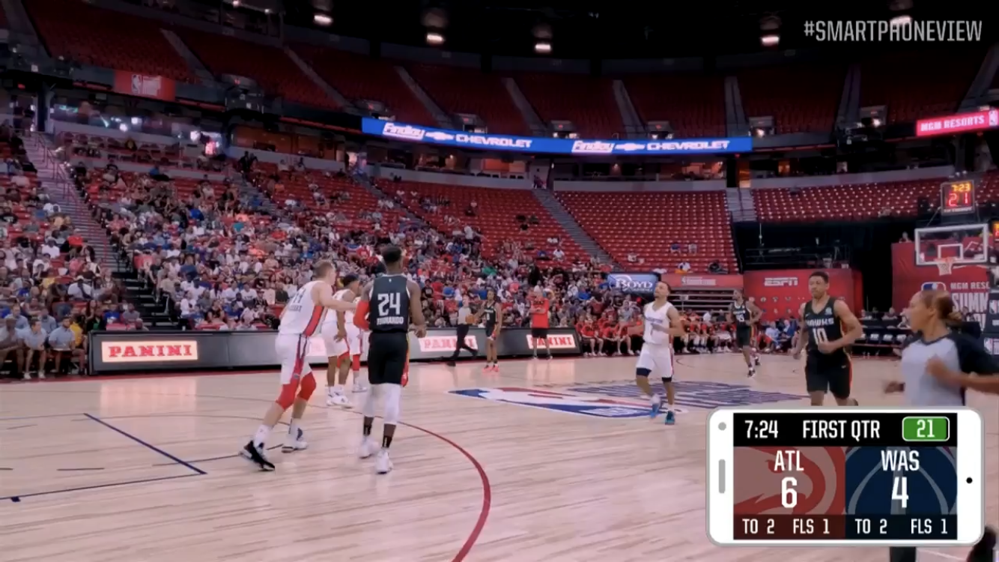

The year 1940 was the first year that basketball was broadcasted. Nine years after this time was the appearance of the NBA (National Basketball Association) which was established in 1949.
In 1967, the ABA (American Basketabll Association), a rival of the NBA, was the first to introduce the 3 point line before joining forces with the NBA.
